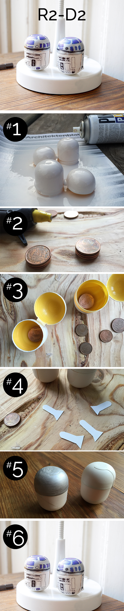

Mirad nuestro video!
1. Pinta o usa spray para pintar el huevo de plástico blanco.
2. Junta 3 cents con pegamento.
3. Pega el dinero en el suelo dentro del huevo.
4. Cortar 2 piernas y pelos en los laterales del robot, de manera que aunque se vuelca a un lado mo toque suelo.
5. Pinta la tapa del huevo en la plata.
6. Pinta con marcador permanente todos los botones y cámaras en el huevo.
Gracias por la gran idea de los minions RedTedArt.
2. Sticks 3 cents together.
